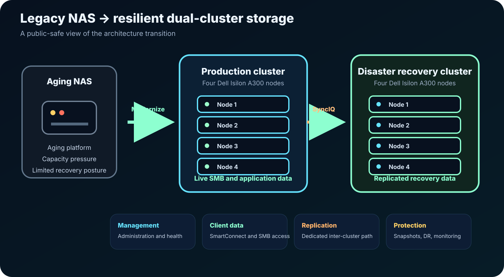
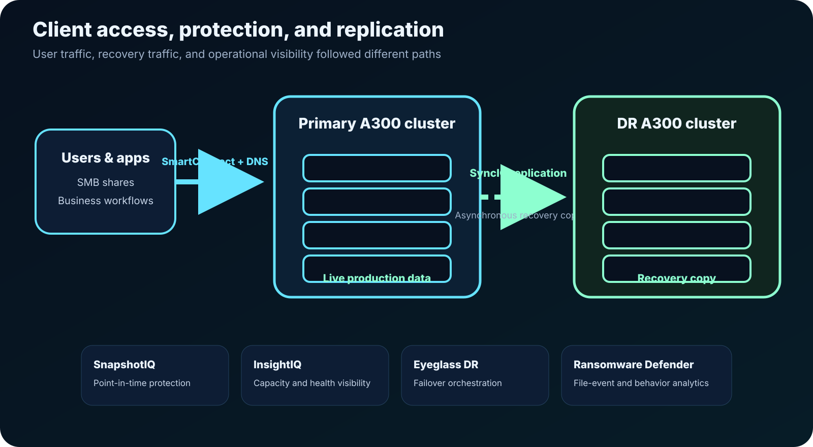
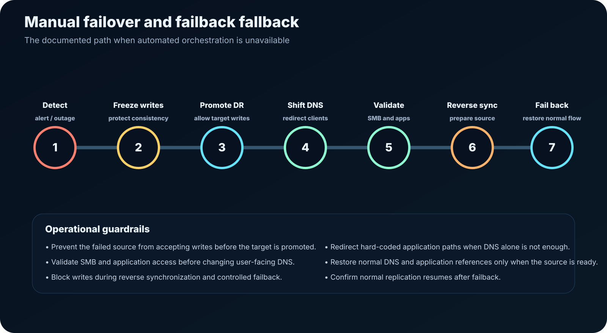
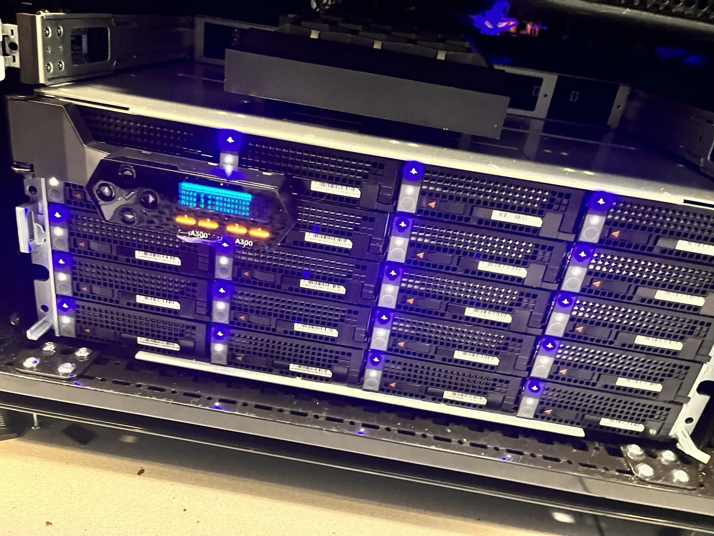
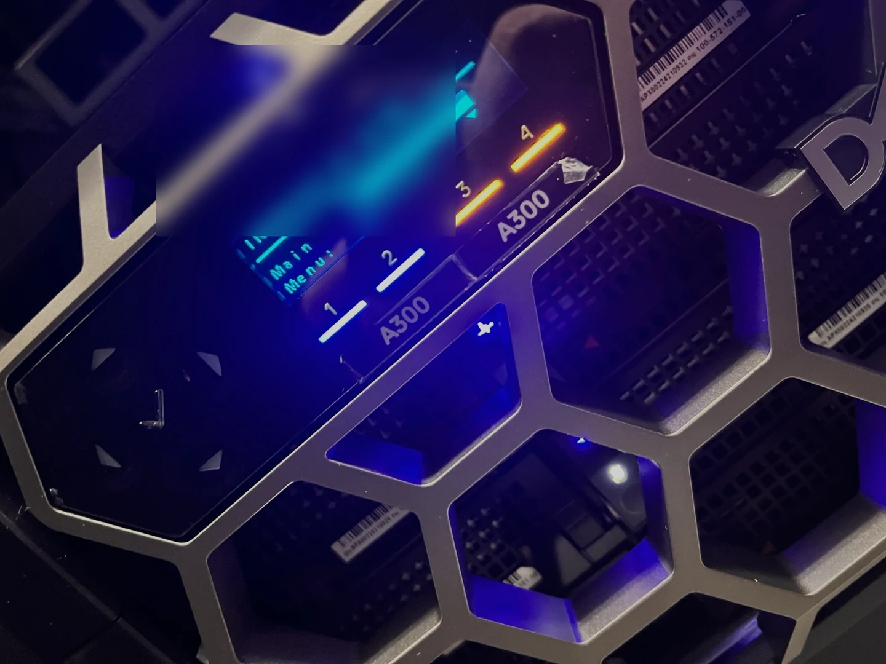
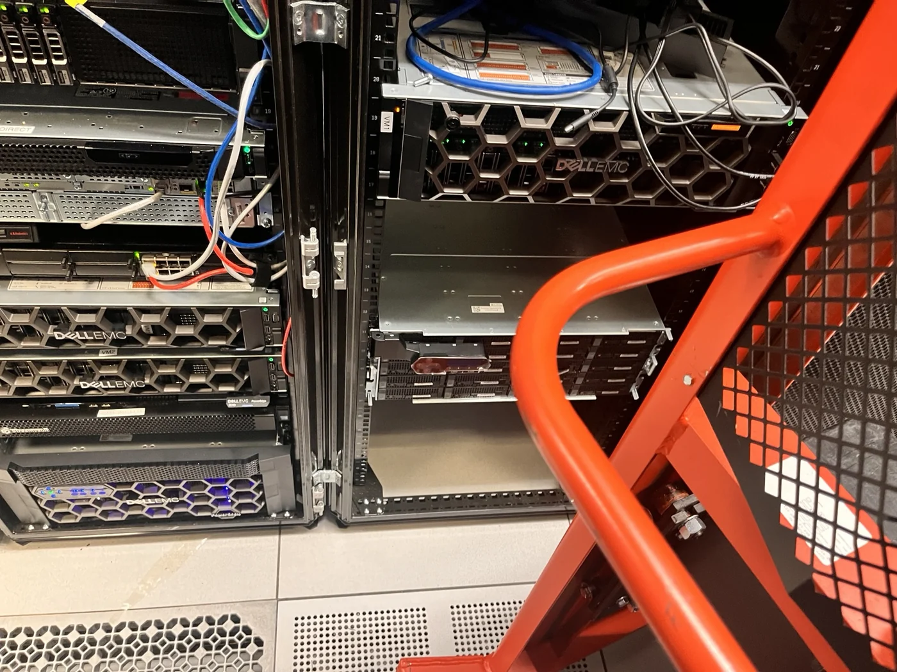
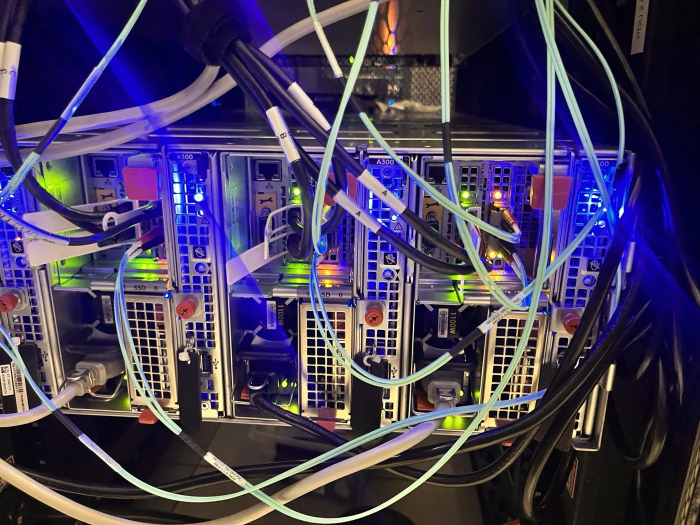
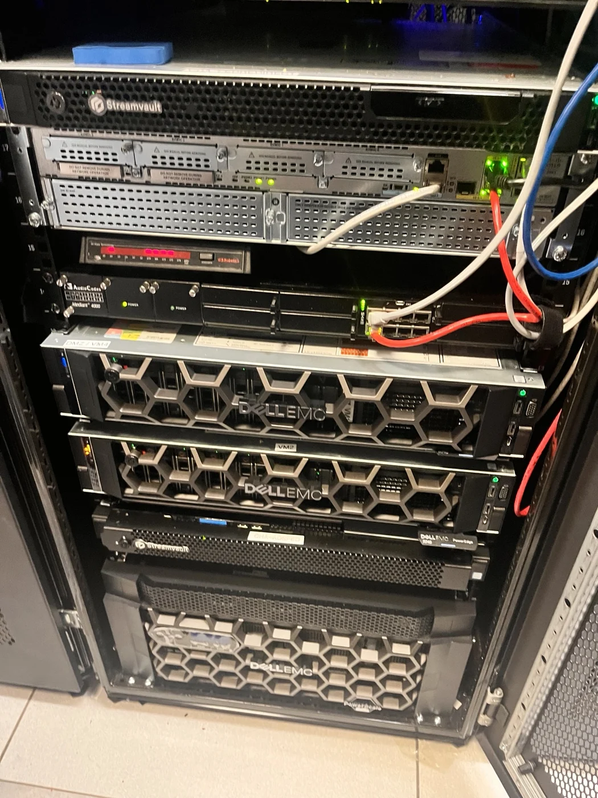
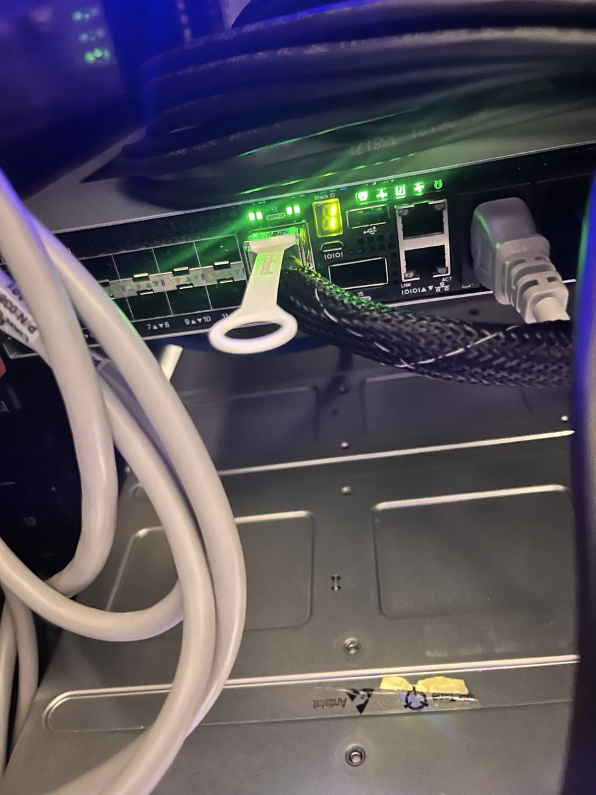

Situation
An aging NAS platform needed to be replaced without losing reliable SMB access, operational visibility, or a practical disaster-recovery path.
Enterprise Storage • Colocation • Disaster Recovery • Ransomware Resilience
Replacing an aging headquarters NAS environment with dual four-node Dell Isilon A300 clusters, separated management, client, and replication paths, and a recovery design that still worked when automation did not.
An aging NAS platform needed to be replaced without losing reliable SMB access, operational visibility, or a practical disaster-recovery path.
Physical deployment, OneFS configuration, SmartConnect/DNS, client data services, SyncIQ replication, snapshots, monitoring, ransomware defense, and recovery documentation.
A resilient production-and-DR storage platform with eight nodes, separated network functions, automated recovery tooling, and a documented manual fallback.
Architecture
The public version keeps internal names, addresses, share paths, and recovery identifiers out of view while preserving the design and operational logic.
01
The modernization moved file services onto a four-node production cluster with a matching four-node disaster-recovery target.

02
SmartConnect handled client access while SyncIQ moved protected data to the DR cluster and supporting tools covered snapshots, monitoring, orchestration, and ransomware analytics.

03
The runbook preserved a controlled manual failover and failback path for an outage that could not depend on automated orchestration.

Physical deployment
Installation required coordination among internal IT, Dell, the colocation facility, and implementation partners. When the rack lift could not finish the job cleanly, the cabinet doors came off and extra hands finished the placement safely.






The technical story
The project replaced an aging headquarters NAS environment with two Dell Isilon A300 clusters running OneFS: a four-node production source and a four-node disaster-recovery target. The design separated cluster administration, user and application data access, and inter-cluster replication instead of treating every storage packet as the same kind of traffic.
SmartConnect and delegated DNS provided a resilient client-facing entry point for SMB services. SyncIQ policies replicated production data asynchronously to the recovery cluster, while SnapshotIQ protected point-in-time data and InsightIQ provided capacity, performance, and cluster-health visibility.
Superna Eyeglass DR added orchestration for synchronization, DNS changes, and SMB/NFS failover. Superna Ransomware Defender added file-event auditing and user-behavior analytics so the recovery design considered destructive activity as well as hardware failure.
The operational work mattered as much as the product stack. The failover runbook required stopping writes to the failed source, allowing writes on the target, validating SMB access, changing delegated DNS, handling hard-coded application paths, preparing reverse replication, preventing writes during failback, restoring normal references, and verifying replication resumed afterward.
That is the difference between installing storage and delivering a recoverable service: hardware, networking, DNS, access, replication, monitoring, security, vendor coordination, and human decision-making all had to agree.
What the work demonstrates
Designed around node redundancy, client access, delegated DNS, replication, monitoring, and protection—not raw capacity alone.
Worked through physical placement, rack constraints, power, network connectivity, labeling, commissioning, and multi-vendor coordination.
Documented both automated orchestration and a controlled manual path that protected write consistency during failover and failback.
Combined replication with snapshots, monitoring, operational alerts, and ransomware-focused file-event and behavior analytics.
Portfolio archive
Explore the career archive or continue into another public-safe infrastructure case study.